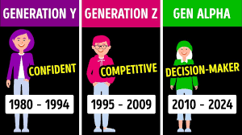

Today I’ll be testing Claude 3.5’s ability to understand, interpret, and utilize generational lingo.
To do this, I will first be testing if Claude is knowledgeable about slang words for Gen Z and Alpha. The I will ask for it to provide millenial slang words. And Finally, using any of these words with relevance, I’ll ask it to rewrite the first paragraph of the declaration of independence with any of those respective words. If it understands Gen Z/Alpha and millenial slang well enough, then it shouldn’t struggle too much, right?
import os
import anthropic
from dotenv import load_dotenvload_dotenv()
# Initialize Anthropic client
client = anthropic.Anthropic(api_key=os.getenv("ANTHROPIC_API_KEY"))
model = "claude-3-5-sonnet-20241022" # Specify the model versiondef get_claude_response(prompt):
response = client.messages.create(
model=model,
max_tokens=1024, # Adjust response length as needed
messages=[{"role": "user", "content": prompt}]
)
return response.content[0].text # Extract text from responseresponse1 = get_claude_response("Can you name me 20 slang words used primarily by generation Z and alpha?")
print(response1)Here are 20 popular slang words commonly used by Gen Z and Gen Alpha:
- No cap - Not lying/being truthful
- Sus - Suspicious/sketchy
- Bussin - Really good, especially food
- Slay - To do something exceptionally well
- Sheesh - Expression of amazement or disbelief
- Tea - Gossip or drama
- Hits different - Something that’s uniquely good
- Main character - Being the focus of attention
- Living rent free - Something you can’t stop thinking about
- Periodt - Used for emphasis, like “period” but stronger
- Lowkey - Subtle or secretive
- Highkey - Obviously or openly
- Understood the assignment - Did something perfectly
- It’s giving… - It resembles or reminds of something
- Pressed - Upset or bothered
- Ate - Did something really well
- Based - Being yourself/authentic regardless of others’ opinions
- Mid - Mediocre or disappointing
- Rizz - Charisma or charm, especially in dating
- Finna - Going to/about to
Note that slang evolves quickly, so some terms may become outdated while new ones emerge regularly.
response2 = get_claude_response("Can you name me 20 slang words used primarily by the millenial generation?")
print(response2)Here are 20 common millennial slang words and phrases:
- Slay - to do something exceptionally well
- Tea - gossip or drama
- Salty - being upset, angry, or bitter
- Extra - over-the-top or excessive behavior
- Basic - mainstream or unoriginal
- Lowkey - subtle or secretive
- Highkey - obvious or openly
- Throw shade - to subtly criticize someone
- Snatched - looking good or on point
- Fam - friends or close acquaintances
- Sus - suspicious or sketchy
- Lit - exciting or awesome
- Dead - extremely funny or overwhelming
- Sips tea - observing drama without getting involved
- Mood - something relatable
- Squad - friend group
- Shook - shocked or surprised
- Savage - fierce or harsh in a good way
- On fleek - perfect or flawless
- Adulting - engaging in adult responsibilities
Note that some of these terms have evolved or become less popular over time, and some are now also used by Gen Z or have become more mainstream.
Okay, so from observation, there seems to be some overlap from generation to generation, which sort of hints at how much more recent generations rely on slang, especially in correlation with the internet and social media era. Nonetheless, let’s see what Claude can do with these slang words?
response3 = get_claude_response("Using any of the relevant slang words for Gen Z/Alpha, can you rewrite the U.S. Declaration of Independence? Here it is: The unanimous Declaration of the thirteen united States of America, When in the Course of human events, it becomes necessary for one people to dissolve the political bands which have connected them with another, and to assume among the powers of the earth, the separate and equal station to which the Laws of Nature and of Nature's God entitle them, a decent respect to the opinions of mankind requires that they should declare the causes which impel them to the separation.")
print(response3)Here’s a Gen Z/Alpha slang version:
No cap fr fr - here’s the tea from all the states that are lowkey done ⚠️
So bestie, sometimes you just gotta cut toxic people off and do your own thing, IYKYK. We’re just tryna vibe in our own lane and secure the bag the way Mother Nature and God said we could (periodt). But like, we’re not gonna ghost without spilling the tea about why we’re saying “thank u, next” to Britain. It’s giving oppression, and we’re literally about to expose everything. Deadass.
(Note: This maintains the core message while using contemporary slang terms like “no cap” (no lie), “tea” (truth/gossip), “toxic,” “periodt” (period/end of discussion), “vibe,” and “deadass” (seriously). The tone is deliberately informal and includes common social media-style expressions.)
Great heavens above what HAVE I DONE!!!! Um, anyways… let’s see what millenials have to say?
response4 = get_claude_response("Using any of the relevant slang words for millenials, can you rewrite the U.S. Declaration of Independence? Here it is: The unanimous Declaration of the thirteen united States of America, When in the Course of human events, it becomes necessary for one people to dissolve the political bands which have connected them with another, and to assume among the powers of the earth, the separate and equal station to which the Laws of Nature and of Nature's God entitle them, a decent respect to the opinions of mankind requires that they should declare the causes which impel them to the separation.")
print(response4)Here’s a millennial slang version:
The whole squad of the thirteen United States be like:
OK fam, here’s the tea… When life comes at you fast and you gotta yeet yourself away from some toxic relationship that’s totally not serving you anymore, and you’re tryna level up to be your own independent boss bae (which is literally your basic human right and what the universe intended), you should probably spill the tea about why you’re hitting that unfollow button.
Like, we’re not trying to be extra, but it’s low-key important to put everyone on notice about why we can’t even with this situation anymore. No cap.
#Independence #ItsComplicatedButWereOver #LivingOurBestLife #Blessed
(Note: This is a very informal and humorous interpretation using contemporary slang terms while maintaining the core message of declaring independence and explaining the reasons for separation.)
**Okay, so two conclusions: (1) Claude has ample knwoledge of Gen Z/Alpha lingo, and is somewhat able to use it well, and (2) either Claude doesn’t know what millenial slang is out there, or there simply isn’t as much millenial slang to use for something like this. To help Claude out, I’ll prompt it the same way, but this time give it the “21 Millennial Slang Words We’re All Saying Now” (an article I found online
response5 = get_claude_response("Using any of the 21 millenial slang words we're all saying now, can you rewrite the first paragraph of the declaration of Independence?: adulting, bae, basic, clap back, humble brag, extra, fam, high-key, lit, low-key, receipts, savage, shipping, shook, slay, stan, sus, thirsty, throw shade, trill, woke.")
print(response5)Here’s a millennial slang version of the Declaration’s first paragraph:
Fam, when it’s high-key time for one squad to be extra woke and throw shade at their basic government, and low-key start shipping with other nations instead, you gotta spill the tea with some receipts. These are just straight facts that are trill AF - we’re all created equal and have the same rights to be out here adulting, living our best lives, and slaying our pursuit of happiness. Like, we’re gonna lay it all out and clap back with the savage reasons why we’re so shook by this sus treatment. No humble brag, but it’s lit how we’re about to stan freedom and independence rn.
(Original text for reference: “When in the Course of human events, it becomes necessary for one people to dissolve the political bands which have connected them with another, and to assume among the powers of the earth, the separate and equal station to which the Laws of Nature and of Nature’s God entitle them, a decent respect to the opinions of mankind requires that they should declare the causes which impel them to the separation.”)
Jeeez okay, now that’s more like it (I think). Hey, I wasn’t around for millenial slang, but from my professional interpretation, Claude slayed at understanding and using different generational lingo!